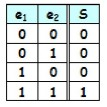
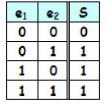
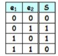

les nombres binaires
les nombres binaires sont des nombres de baze 2 on utilisent sauf 0 et 1 l'ordinateur utilise se type de nombres.
Chaque 0 ou 1 dans un nombre binaire est appelé un bit.
comment nous changons un nombre decimal a un nombre binaire
il y a deux methode:
-
le premier methode il suffit de faire des divisions entières successives par 2 jusqu'à ce que le quotient devienne nul.
Le résultat sera la juxtaposition des restes.

-
Pour trouver le résultat, il suffit :
- de trouver le bit de poids fort permettant de s'approcher le plus possible du nombre décimal.
- en cas de valeur inférieur, trouver le bit de poids inférieur s'approcher le plus possible du résultat de la soustraction entre la valeur décimale
et celle du poids du bit trouvé précédemment

table des fonctions logiques
| fonction logique |
table de verite |
equoition |
en python |
exemple |
explication |
remarque |
| and |
 |
|
& |
5&7=5
6&5=4
|
5=101
7=111
r=101
|
|
| or |
 |
|
| |
5|7=7
6|5=7
|
5=101
7=111
r=111
|
|
| exor |
 |
|
^ |
5^7=2
6^5=3
|
5=101
7=111
r=010
|
x^x=0
x^0=x
x^y=y^x
Missing Number
|
| not |
|
(n+1)*(-1) |
~ |
~5=-6
~(-5)=4
|
(5+1)*(-1)=-6 |
|
| shift right |
|
n//(2)**nombre de shift |
>> |
5>>1=2
7>>1=3
|
5=101
r=010
|
|
| shift left |
|
n*(2)**nombre de shift |
<< |
5<<1=10
7<<2
|
5=101
r=1010
|
|
les problems pour les debutant
on a a et b deux nombre de baze decimal on peut utilise les operateur logique sur eux il y a des debutants fait deux autres variables contien bin(a) et bin(b).
apres fait les operateurs logiques la programme affiche un errer on fait ses operateurs logiques sur les nombres decmale
remarque
dans les nombres binaires on ecrient a la gauche 1 par exemple -5 egale 1101 en binaire
dans python il y a un problem dans les nombres negative il ecrit "-0bw avec w est le nombre en binaire
dans les entier on travaillent sur 32 bits 10...00w par exemple -5=10...00101